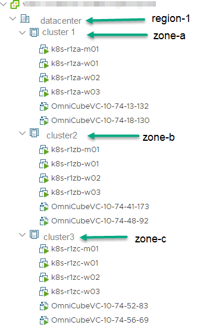

Deployment with Topology for HPE SimpliVity CSI Driver for vSphere
In order to enable topology aware provisioning, you need to perform the following steps when deploying the Kubernetes cluster:
- Set Up Zones in an HPE SimpliVity Environment
- Enable Zones for the vSphere CPI and HPE SimpliVity CSI Driver
See Using Topologies for more information on when you might want to enable this feature and how to use it.
Set Up Zones in an HPE SimpliVity Environment
The zone configuration will depend on your HPE SimpliVity environment. A common scenario is to create a zone per HPE SimpliVity cluster as the HPE SimpliVity datastores are available to all HPE OmniStack hosts in the cluster.
In the following example, the HPE SimpliVity environment includes three clusters with Kubernetes node VMs located on all three clusters.

Create Zones Using vSphere Tags
Use vSphere tags to label zones in your vSphere environment. In this example, the HPE SimpliVity environment includes three clusters: cluster1, cluster2, and cluster3. The Kubernetes node VMs are distributed across the three clusters. Category tags are created for the Kubernetes regions and zones. Then the datacenter is tagged with a region and the clusters are tagged with zones.
Make sure that you have appropriate tagging privileges that control your ability to work with tags. See vSphere Tagging Privileges in the vSphere Security documentation.
Note: Ancestors of node VMs, such as host, cluster, and data center, must have the ReadOnly role set for the vSphere user configured to use the CSI driver and CCM. This is required to allow reading tags and categories to prepare nodes' topology.
-
In the vSphere Client create two tag categories that will be used for identifying regions and zones in your environment. In this example, the categories are named k8s-region and k8s-zone.
For information, see Create, Edit, or Delete a Tag Category in the vCenter Server and Host Management documentation.
-
Create tags for each zone and region in your environment. This example has one region and three zones (one per cluster).
Categories Tags k8s-region region-1 k8s-zone zone-a, zone-b, zone-c -
Apply corresponding tags to the data center and clusters as indicated in the table.
For information, see Assign or Remove a Tag in the vCenter Server and Host Management documentation.
Categories Tags datacenter region-1 cluster1 zone-a cluster1 zone-b cluster1 zone-c
Enable Zones for the vSphere CPI and HPE SimpliVity CSI Driver for vSphere
After creating and applying topology tags in vSphere, the next step is to install the vSphere CPI and the HPE SimpliVity CSI driver using the zone and region categories.
-
Add Labels section to cloud-config when installing the vSphere CPI.
Add a
Labelssection to the configmap cloud-config file, specifying the category names you created for the region and zone.[Global] insecure-flag = "true" # Set to true to use self-signed certificate [VirtualCenter "1.1.1.1"] # vCenter IP insecure-flag = "true" # Set to true to use self-signed certificate user = "administrator" # Login ID password = "password" # Login Password port = "443" # vCenter Server Port, Default Port 443 datacenters = "datacenter" # Comma separated list of Datacenter names where Kubernetes node VMs are present. [Labels] region = k8s-region # vSphere category name for Kubernetes region zone = k8s-zone # vSphere category name for Kubernetes zone -
Verify that your zones and regions are applied to the Kubernetes nodes.
After installation, labels
failure-domain.beta.kubernetes.io/regionandfailure-domain.beta.kubernetes.io/zoneare applied to all nodes.$ kubectl get nodes -L failure-domain.beta.kubernetes.io/zone -L failure-domain.beta.kubernetes.io/region NAME STATUS ROLES AGE VERSION ZONE REGION k8s-r1za-m01 Ready master 13h v1.17.5 zone-a region-1 k8s-r1za-w01 Ready <none> 13h v1.17.5 zone-a region-1 k8s-r1za-w02 Ready <none> 13h v1.17.5 zone-a region-1 k8s-r1za-w03 Ready <none> 13h v1.17.5 zone-a region-1 k8s-r1zb-m01 Ready master 13h v1.17.5 zone-b region-1 k8s-r1zb-w01 Ready <none> 13h v1.17.5 zone-b region-1 k8s-r1zb-w02 Ready <none> 13h v1.17.5 zone-b region-1 k8s-r1zb-w03 Ready <none> 13h v1.17.5 zone-b region-1 k8s-r1zc-m01 Ready master 13h v1.17.5 zone-c region-1 k8s-r1zc-w01 Ready <none> 13h v1.17.5 zone-c region-1 k8s-r1zc-w02 Ready <none> 13h v1.17.5 zone-c region-1 k8s-r1zc-w03 Ready <none> 13h v1.17.5 zone-c region-1 -
Add Labels section to cloud-config when installing the CSI driver.
In the credential secret file, add a
Labelssection with entries for the region and zone categories you created in vSphere.[Global] cluster-id = "demo-cluster-id" # Cluster Name, Each Kubernetes cluster should have it's own unique cluster-id set in the csi-vsphere.conf file [VirtualCenter "1.1.1.1"] # vCenter IP insecure-flag = "true" # Set to true to use self-signed certificate user = "administrator" # Login ID password = "password" # Login Password port = "443" # vCenter Server Port, Default Port 443 datacenters = "datacenter" # Comma separated list of Datacenter names where Kubernetes node VMs are present. [HPESimpliVity] ip = "1.1.1.2" # Management Virtual Appliance (MVA) IP Address or HPE SimpliVity OVC Management IP address user = "simplivity_user" # Login ID of HPE SimpliVity OVC password = "simplivity_password" # Password of HPE SimpliVity OVC [Labels] region = k8s-region # vSphere category name for Kubernetes region zone = k8s-zone # vSphere category name for Kubernetes zone -
Verify that your CSI driver installation has the topology feature enabled.
$ kubectl get csinodes -o jsonpath='{range .items[*]}{.metadata.name} {.spec}{"\n"}{end}' k8s-r1za-m01 map[drivers:<nil>] k8s-r1za-w01 map[drivers:[map[name:csi.simplivity.hpe.com nodeID:k8s-r1za-w01 topologyKeys:[failure-domain.beta.kubernetes.io/region failure-domain.beta.kubernetes.io/zone]]]] k8s-r1za-w02 map[drivers:[map[name:csi.simplivity.hpe.com nodeID:k8s-r1za-w02 topologyKeys:[failure-domain.beta.kubernetes.io/region failure-domain.beta.kubernetes.io/zone]]]] k8s-r1za-w03 map[drivers:[map[name:csi.simplivity.hpe.com nodeID:k8s-r1za-w03 topologyKeys:[failure-domain.beta.kubernetes.io/region failure-domain.beta.kubernetes.io/zone]]]] k8s-r1zb-m01 map[drivers:<nil>] k8s-r1zb-w01 map[drivers:[map[name:csi.simplivity.hpe.com nodeID:k8s-r1zb-w01 topologyKeys:[failure-domain.beta.kubernetes.io/region failure-domain.beta.kubernetes.io/zone]]]] k8s-r1zb-w02 map[drivers:[map[name:csi.simplivity.hpe.com nodeID:k8s-r1zb-w02 topologyKeys:[failure-domain.beta.kubernetes.io/region failure-domain.beta.kubernetes.io/zone]]]] k8s-r1zb-w03 map[drivers:[map[name:csi.simplivity.hpe.com nodeID:k8s-r1zb-w03 topologyKeys:[failure-domain.beta.kubernetes.io/region failure-domain.beta.kubernetes.io/zone]]]] k8s-r1zc-m01 map[drivers:<nil>] k8s-r1zc-w01 map[drivers:[map[name:csi.simplivity.hpe.com nodeID:k8s-r1zc-w01 topologyKeys:[failure-domain.beta.kubernetes.io/region failure-domain.beta.kubernetes.io/zone]]]] k8s-r1zc-w02 map[drivers:[map[name:csi.simplivity.hpe.com nodeID:k8s-r1zc-w02 topologyKeys:[failure-domain.beta.kubernetes.io/region failure-domain.beta.kubernetes.io/zone]]]] k8s-r1zc-w03 map[drivers:[map[name:csi.simplivity.hpe.com nodeID:k8s-r1zc-w03 topologyKeys:[failure-domain.beta.kubernetes.io/region failure-domain.beta.kubernetes.io/zone]]]]